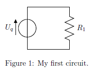
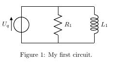

While Tikz offers many features and packages to create diagrams and all sorts of other drawings, it unfortunately lacks a good package to layout electric circuits. Using the package circuitikz we can easily solve this problem. It extends provides a new environment circuitikz in which we can easily draw our circuits in no time. The syntax is exactly the same as shown in the previous lesson, so we can directly start with a simple code example:
\documentclass{article} \usepackage{tikz} \usepackage{circuitikz} \begin{document} \begin{figure}[h!] \begin{center} \begin{circuitikz} \draw (0,0) to[V,v=$U_q$] (0,2) % The voltage source to[short] (2,2) to[R=$R_1$] (2,0) % The resistor to[short] (0,0); \end{circuitikz} \caption{My first circuit.} \end{center} \end{figure} \end{document}
This will create the following circuit diagram in our document:

The circuit will be drawn in the same way as a path in tikz, but we specify special options for the elements:
\draw (0,0)
to[V,v=$U_q$] (0,2) % The voltage source
Starting at (0,0) we will draw a voltage source specifying the [V,v=UqUq] options to the coordinates (0,2), where V chooses the symbol for a voltage source and the v=UqUq draws the voltage arrow next to it. Then we proceed to the resistor:
to[short] (2,2)
to[R=$ R_1 $ ] (2,0) % The resistor
We first must draw a short circuit from (0,2) to (2,2) and then put the resistor symbol on the path from (2,2) to (2,0) note that this time the label
of the element must be specified directly (R=R1
).
A list of all available elements for circuits is available in the circuitikz manual.
But how can we add more elements to the circuit? Let's say we want to add an inductor parallel to the Resistor. The easiest way is to add a new
draw command like this:
\begin{circuitikz} \draw (0,0) to[V,v= $ U_q $ ] (0,2) % The voltage source to[short] (2,2) to[R= $ R_1 $ ] (2,0) % The resistor to[short] (0,0); \draw (2,2) to[short] (4,2) to[L= $ L_1 $ ] (4,0) to[short] (2,0); \end{circuitikz}
After compilation we'd get the following circuit diagram:
Adding a capacitor next to it, is just as simple:
\begin{circuitikz} \draw (0,0) to[V,v= $ U_q $] (0,2) % The voltage source to[short] (2,2) to[R= $ R_1 $ ] (2,0) % The resistor to[short] (0,0); \draw (2,2) to[short] (4,2) to[L= $ L_1 $ ] (4,0) to[short] (2,0); \draw (4,2) to[short] (6,2) to[C= $ C_1 $ ] (6,0) to[short] (4,0); \end {circuitikz}
This would give us the following diagram:
The circuitikz manual provides examples of all symbols and functions and can also be used for further reference. I've also written a follow-up in lesson 14 which covers explains some more useful features and more components.